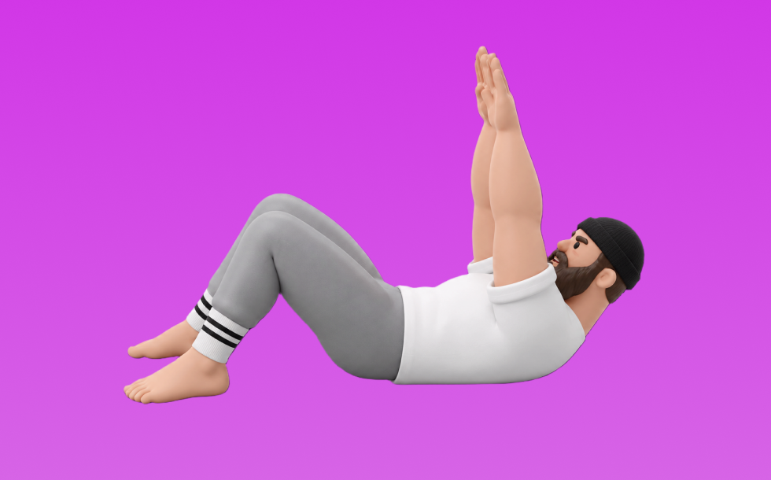

クランチ

クランチとは、自重を使って「体幹を丸める」動作で腹筋群（腹直筋、腹横筋）を鍛える種目です。器具なしで手軽にでき、フォーム次第で負荷調整しやすいのが特徴で、上体を丸めて起こし、ゆっくり戻す動作を繰り返します。お腹の引き締めと体幹固定力の向上が期待できます。
- 対象部位
- 体幹
- 器具
- 自重
- 記録形式
- 回数
- 別名
- 腹筋クランチ
YouTube動画
-
正しいクランチ（腹筋）のやり方｜注意したい4つのポイント
-
【自宅筋トレ】なかやまきんに君の正しい腹筋３種目を学ぼう。
-
腹筋の定番筋トレ「クランチ」。お腹を割るならこのメニュー（腹直筋）
-
『クランチ』腹筋の正しいやり方を解説！初心者向けの腹筋です
-
シックスパックの基本！腹筋を割るなら【クランチ】をマスターしよう！これが出来なくて他の腹筋運動をやるな！お腹引き締め
-
お腹痩せ筋トレの定番「クランチ」の正しいやり方。初心者におすすめの腹筋強化メニュー【15回×3セット】
-
2分で分かるクランチのやり方【筋トレ初心者向け】
-
腹筋に効く！お腹痩せ筋トレの定番「クランチ」の正しいやり方
-
【最強プランク】初心者オススメ！腹筋を鍛える体幹トレーニング「プランク」の正しいやり方
-
【解説】ディクラインクランチ：「大きいブロックの腹筋」をつくるためのNo.1種目！！
-
【縦線入ります】鬼の腹筋クランチ！音楽に合わせてダンス感覚でピラティス
-
腹筋割るなら、限界までいじめ抜け！超ゆっくり追い込む「スロークランチ」を解説
-
【腹筋＆体幹】基本を解説！プランク30秒3セットを一緒に
-
バイシクルクランチの正しいやり方。腹筋強化＆脂肪燃焼！【20回×3セット】
-
【下腹部＆くびれ】10種目10分間で下腹を引き締めて、くびれのあるウエストを作りましょう。目指せ最速シックスパック。初心者の方用のやり方あり。
-
ひねり腹筋2分！ウエストを絞る「レッグアップツイスト」のやり方
-
【初心者でも腹筋割れる】簡単なのに効果絶大！毎日3分だけの腹筋トレーニング
-
お腹やせのコツ～クランチの実践～【コナミメソッドまとめ】
-
腹筋が効く様になるクランチ動作のコツ｜ボディメイク初心者へ解説｜大和
-
【超初心者向け】腹筋のトレーニング【7分間】
-
【100%必ず効く】腹筋の境地を超えてもはや悟り。4分で限界突破腹筋トレーニング
-
【地獄の3分】腹筋を最速で割るトレーニング
-
美しいシックスパック（腹筋）を手に入れる！「リバースクランチ」の正しいやり方【15回×3セット】
-
バイシクルクランチ（腹筋）｜自宅で出来る夏向けトレーニング004
-
【毎日3分】爆速で腹筋を割る鬼のプランク7種目
YouTubeショート
-
【よくある間違いクランチ】 #ダイエット #筋トレ #新座市 #志木市 #腹筋
-
クランチ（腹筋）のやり方を解説【リアルスタイル フィットネスクラブ】
-
起き上がる時に腹筋で起きれない人はこれやろう #整体 #腸腰筋 #家トレ
-
あなたは大丈夫？？プランクの危険な落とし穴#shorts
-
腹筋の正しいやり方と効果です🔥#shorts #トレーニング #自宅トレーニング #自宅トレ #筋トレ #training #自重トレーニング #腹筋
-
お腹引き締めたい人はこれを目指して！【バイシクルクランチ】 #shorts #腹筋 #お腹痩せ #お腹引き締め #お腹スッキリ
-
こんな腹筋はやめましょう #フィットネス #筋トレ
-
腹筋を最大限に鍛える種目３選【筋トレ】
-
【海外で6,700万回再生 バキバキに割れる腹筋トレーニング】腹筋割れた人や縦線入った人が続出!! ABS WORKOUT abs exercise #腹筋トレーニング #腹筋チャレンジ #腹筋トレ
-
【筋トレ解説】寝ながら腹筋を鍛える！リバースクランチ解説#shorts
-
これで確実に下腹に効くリバースクランチのやり方
-
初心者向け🔰チェストプレスのワンポイントアドバイス！ #筋トレ
-
下腹ポッコリさん必見！フォームローラーでペタ腹爆誕トレ #宅トレ #ダイエット #お腹痩せ #トレーニング
-
反り腰さん向けプランクのやり方！
-
ウエストを細くしたいならプランクやクランチはNG！Don’t do plank and crunch to get rid of fat!
-
㊗️70万再生！反り腰の人はこれやって！反り腰改善、ぽっこりお腹解消効果あり！#ダイエット #産後ダイエット #宅トレ #反り腰 #姿勢改善 #ぽっこりお腹解消
-
【腰痛】【肩痛】になるアブローラーのフォームはこの3つが原因です。 #パーソナルトレーナー #筋トレ #アブローラー #腹筋ローラー
-
10倍効く正しいレッグレイズのやり方！知らないと損です #Shorts
動作方法
- 体幹を固定して姿勢を整える
- 反動を使わず、腹部の収縮を感じる
- 呼吸を止めずに動作する
動作ポイント
- 腰を反らしすぎない
- 首に力を入れすぎない
ワンポイントアドバイス
- 回数よりも体幹の安定を優先する
- 腰に違和感がある場合は可動域を調整する
目的別回数設定
目的や体力に応じた一般的な目安です。無理のない範囲で調整してください。
- 筋力アップ
- 1〜5回
- 筋肥大
- 6〜12回
- 持久力アップ
- 13〜20回
YouTube動画について
動画はYouTubeの公開情報をもとに表示しています。内容は投稿者によるもので、Biggrによる監修ではありません。
アプリを入手
筋トレやトレーニングの記録はBiggrにお任せください。今すぐ無料で使い始められます。